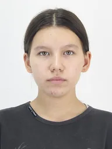
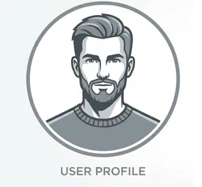
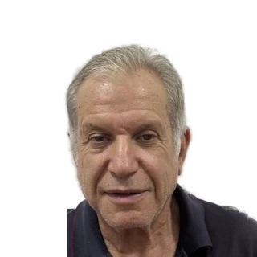
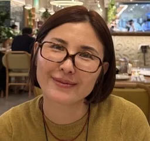

Amina
English · IELTS SpecialistA teacher with international internship experience and a confirmed IELTS score of 7.0. Specializes in exam preparation and conversational practice, inspiring students to break through the language barrier and confidently pursue their goals.Преподаватель с опытом зарубежной стажировки и подтвержденным результатом IELTS 7.0. Cпециализируется на подготовке к экзаменам и разговорной речи. Вдохновляет на учебу, помогает преодолеть языковой барьер и уверенно идти к своей цели.

Anuar
German · Exam PreparationTeacher of English and German who prepares students for Goethe-Institut and telc exams, with particular attention to grammar and language structure.Преподаватель aнглийского, немецкого языков, готовит к экзаменам Goethe-Institut и telc, уделяет особое внимание грамматике и структуре языка.

Nazym
Italian · Translation & StylisticsA certified Italian teacher and working translator who lived and studied in Rome. Three literary books translated, with equal command of fine writing and demanding specialist terminology — from law and industrial processes to academic vocal, instrumental music and the beauty industry. She teaches style and structure rather than set phrases: her students read the classics and learn to think in Italian. The result is not surface-level conversation but real command of the language — negotiations at any level and stylistically mature writing.Дипломированный преподаватель итальянского и практикующий переводчик, жила и училась в Риме. Три художественные книги в переводе; одинаково свободно работает и с изящной словесностью, и со сложной специальной терминологией — от юриспруденции и технических процессов в промышленности до академического вокала, инструментальной музыки и бьюти-индустрии. Учит не просто излагать мысли, а чувствовать стилистику и строить безупречную письменную речь: на её уроках разбирают классику и учатся думать по-итальянски. Результат — не поверхностные разговорные навыки, а языковая эрудиция, способность вести переговоры любой сложности и писать стилистически зрелые тексты.

Natalya
Japanese · JLPT N2-CertifiedSenior university lecturer and translator who completed an internship in Tokyo, Japan. Prepares students for admission to Japanese language schools and universities, using a unique teaching methodology.Cтарший преподаватель университета, переводчик, проходила стажировку в Японии, город Токио. Подготовка к поступлению в языковые школы и университеты Японии. Уникальная методика преподавания.
Посетите мой сайт www.nihongo.kz
Valeria
Chinese · HSK CoachA fluent Mandarin speaker specializing in HSK preparation and business Chinese for students planning to study or work in China. Her academic experience in Xi'an, China lets her immerse students not only in the nuances of the language but also in the country's rich culture, traditions, and modern life.Преподаватель, свободно говорящий на китайском, специализируется на подготовке к HSK и деловом китайском, для учебы и работы в Китае. Полученный в Китае (город Сиань) академический опыт помогает ей глубоко погружать студентов не только в тонкости языка, но и в богатую культуру, традиционный уклад и современную жизнь Поднебесной.
Nadezhda
Chinese · HSK CoachA young teacher who successfully completed a Chinese language course at Shanghai Ocean University in 2026.Молодой преподаватель, успешно окончившая курс изучения китайского языка в Шанхайском океаническом университете в 2026 году.

Reduan
French · DELF DALF PreparationA native French teacher with experience teaching at universities in France and Kazakhstan. Specializes in targeted preparation for international certification exams for study, work and immigration (DELF/DALF, TCF/TEF) for France and Canada, helping students quickly master the test format, develop natural speech, and confidently pass every language exam needed to move or enroll abroad.Преподаватель французского языка, носитель. Имеет опыт преподавания в университетах Франции и Казахстана. Специализируется на целевой подготовке к международным сертификационным экзаменам для учебы, работы и иммиграции (DELF/DALF, TCF/TEF) для Франции и Канады. Помогает быстро освоить структуру тестов, отработать естественную речь и уверенно пройти все языковые испытания для переезда или поступления.

Аigerim
Korean · TOPIK PreparationTeacher of Korean and Kazakh who completed training and an internship in South Korea.Преподователь корейского, казахского языков. Проходила обучение и стажировку в Южной Корее.

Natalya
Russian for ForeignersExperienced teacher of Russian as a foreign language, focused on the practical, everyday Russian needed for life in Kazakhstan.Опытный преподаватель русского как иностранного, делает упор на практический, повседневный русский язык для жизни в Казахстане.
Reduan
Arabic · Modern Standard & DialectsNative Arabic teacher covering Modern Standard Arabic plus a regional dialect of your choice, for travel, study and business.Преподаватель-носитель арабского, преподаёт современный стандартный арабский и региональный диалект по выбору — для путешествий, учёбы и бизнеса.

Raimbek
SpanishA Spanish teacher with a confirmed international B2 level, holding the international DELE Nivel B2 diploma issued by the Instituto Cervantes and Spain's Ministry of Education. Focuses on live conversation and video materials.Преподаватель испанского языка с подтвержденным международным уровнем В2 - обладатель международного диплома DELE Nivel B2, выданного институтом Сервантеса и Министерством образования Испании. Акцент на живое общение и видеоматериалы.
Ramazan
TurkishA native Turkish teacher and TOMER-certified instructor.Преподаватель и носитель Турецкого языка, преподаватель TOMER.

Denisa
CzechDiscover two rich and fascinating languages — Czech and German. Whether you want to travel, advance your career, or simply learn to communicate in these languages, Denisa will help you reach your goal! Denisa is fluent in Czech (native), German and Russian. Born in the Czech Republic, she studied and worked in Germany. Denisa knows how to find the right approach for every student, and her lessons are never boring. We also help place students in Czech universities — full details available on request.Откройте для себя два богатых и интересных языка — чешский и немецкий. Независимо от того, хотите ли вы путешествовать, развивать карьеру или просто научиться общаться на этих языках, Дениса поможет вам достичь цели! Дениса свободно владееет чешским (родной), немецким и русскими языками. Уроженка Чехии, училась и работала в Германии. Дениса умеет найти подход к каждому ученику. Ее уроки никогда не бывают скучными. Отправляем на обучение в университеты Чехии! Вся информация по запросу.